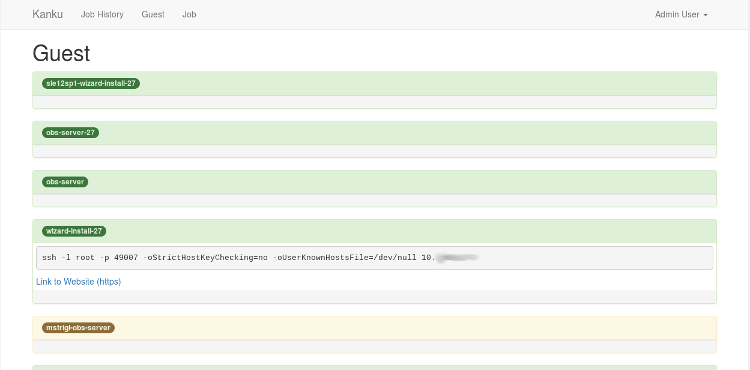
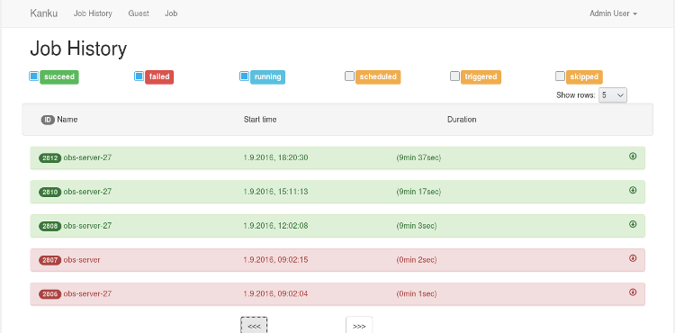
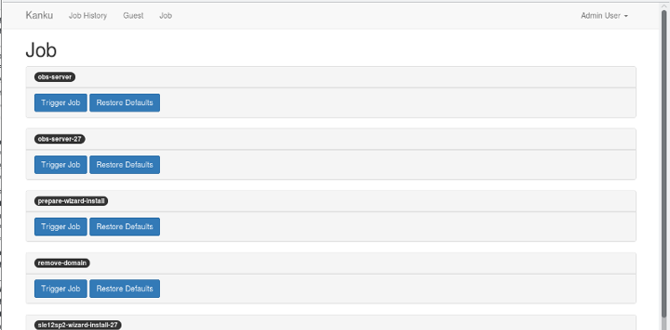
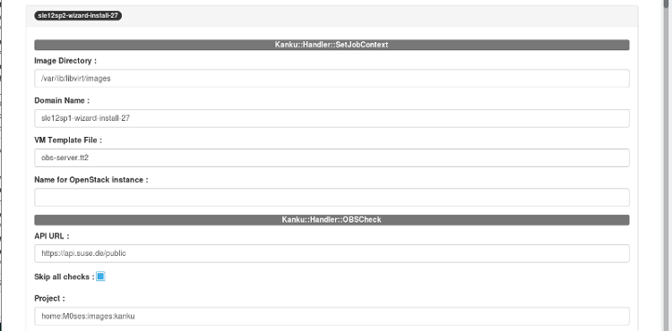
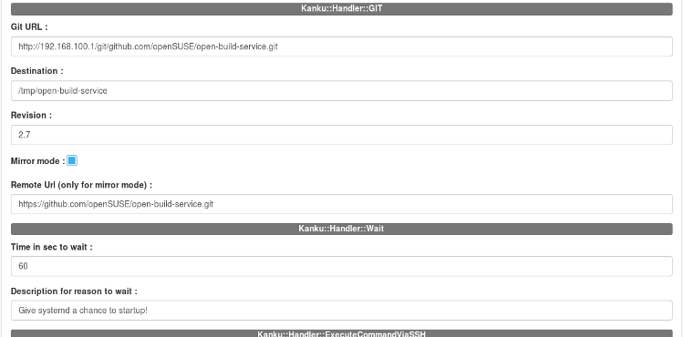

kanku is designed to give you a better integration of your kiwi images built by the Open Build Service (OBS) in your development and testing workflow.
It can be run in two modes
The developer mode (e.g. on your laptop/workstation) while developing
The server mode (e.g. a dedicated Server for QA) to run tasks/tests periodically
The developer mode
In a simple configuration file in YAML format you can specify the location of your kiwi image and actions to be executed after downloading the image and starting a Virtual Machine using the downloaded image. You can configure one or multiple jobs per project. These jobs consists of one or more tasks which use a handler module and the given options.
With the kanku command line tool you can easily
create a new VM based on the configured image
run commands on the VM via SSH or serial console
use salt-ssh to configure your VM
access the created VM via ssh
share your project/source directory with the VM
The server mode
In server mode, a daemon process, the "kanku-scheduler", can run configured jobs peridocally or you can trigger a job manually. As the job configuration is very similar to the developer mode, you can easily adopt the configurations used in developer mode. The results can be shown via WebUI or with the kanku command line tool in a terminal





Installation
Automatic installation with yast one-click-install
Simply search on software.opensuse.org for your distribution and install the package
Manual installation
Configuration of software respositories
sudo zypper ar obs://devel:kanku devel:kanku
sudo zypper ar obs://devel:kanku:perl devel:kanku:perl
sudo zypper ref -s
Installation of package
sudo zypper in kanku
Setup your environment
sudo /opt/kanku/bin/kanku setup --devel
# if you would like to have more control about the modifications on your system
# please use:
# sudo /opt/kanku/bin/kanku setup --devel --interactive
sudo shutdown -r now
Preparing a new Project
init will create a default Kankufile which should give you a good starting
point. The option "--memory=..." defines the RAM of the virtual guest and is optional.
Default is 2G of RAM.
# create directory
mkdir MyProject
# cd in project's directory
cd MyProject
kanku init --memory=1024 --domain_name my-project
Download, create and start a new guest
kanku up
Connect to new machine
Per default, if it exists, your ssh key is added to the authorized keys file
Otherwise you can login as
User: kanku / Password "kankusho"
User: root / Pasword "kankudai"
Please change the passwords at first login
# Connect with user kanku
kanku ssh
# Connect as user root
kanku ssh -u root